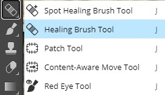
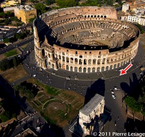
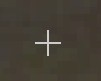
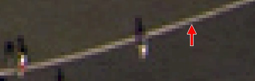
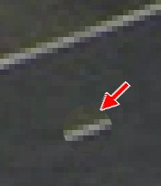
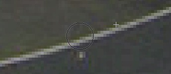
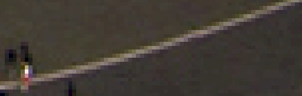

|
Step 1: Intro | Step 2: Brush/Pencil | Step 3: Spot Healing Brush | Step 4: Healing Brush | Step 5:
Patch | Step 6: Content-Aware Move | Step 7: Content Aware Fill | Step 8: Clone Stamp
| Step 9: Combining Tools |
| Healing Brush Tool |
The Healing Brush Tool works similar to the Spot Healing Brush Tool. When we used the Spot Healing Brush Tool, Photopea was using whatever was around the object we were trying to remove as source material to replace the item. With the Healing Brush Tool, we first identify a location in the image that Photopea will use as the source for the color. When we draw, Photopea blends the pixels from the sampled area with the pixels in the target area to attempt to create a seamless image. Let's get some practice.
Right-click the Spot Healing Brush Tool and select the Healing Brush Tool...

Zoom in on the area indicated below...

Locate the person indicated below...
Press and hold the Alt key - notice when you do this that your cursor becomes a
plus sign...

Click on the line pointed at with the arrow below...

Notice as you drag the cursor around that you can see the target area where you
clicked inside the cursor...

This will let you know what you will be transferring to the new area
Place your cursor where indicated below...
Click and drag to begin removing the person – notice as you drag that
photopea
places a tiny + as the spot you are copying...

Remove the entire person...

Make sure you understand what happened in this Step. We didn't just take whatever was under the plus sign in the image for direction 7 and copy it onto the person (that is what Clone Stamp does, which we will cover in Step 8). Instead Photopea took pixels from the area we defined (the area under the plus sign) and combined them with the pixels at the location of the person we were removing. In this way, we get a nice, seamless removal where the colors are maintained and everything is smoothed out and looks realistic. Again, this tool cannot be used everywhere in the image, but it is very effective at removing people who are close to things like buildings and lines.
Go around the image and remove any people the Healing Brush will be
quick and effective on - I'm not going to tell you this time where those
people are, you have to figure this one out on your own
HINT: there are not a great number of areas this tool will work best on
As with the Spot Healing Brush Tool, if you try to remove a person or object and you end up with some sort of distortion, simply undo your action and move on. We still have 4 different ways to remove items, so we will eventually cover how to remove anything we want.
Let's save our work up to this point.
Up next is the Patch Tool, which will take replacing objects in an entirely different direction.
|
Step 1: Intro | Step 2: Brush/Pencil | Step 3: Spot Healing Brush | Step 4: Healing Brush | Step 5: Patch | Step 6: Content-Aware Move | Step 7: Content Aware Fill | Step 8: Clone Stamp | Step9: Combining Tools |